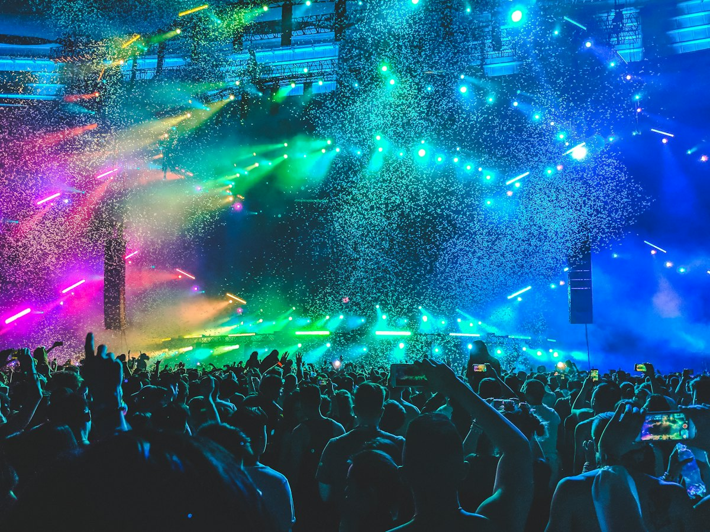

Upcoming · Jakarta
We The Fest
Gelora Bung Karno — Jakarta
An afternoon festival set. Stage times and tickets are on the event page.
Event DetailsPerformance
One festival date is still in front of the band. The other three are shows they have already played. Every event link opens the public page for that date.
Upcoming · Jakarta
Gelora Bung Karno — Jakarta
An afternoon festival set. Stage times and tickets are on the event page.
Event Details
Past · Bandung
Institut Français Indonesia — Bandung
A club-length set built around the Afterglow Avenue EP, with North Window played live for the second time.
Event DetailsPast · Bandung
Braga — Bandung
The release night for the single. A short set, a long encore, and the first time the new chorus was loud enough.
Event Details
Past · Bandung
Campus hall — Bandung
An early full-band booking, back when Afterglow Avenue was still the newest thing in the set.
Event Details